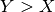
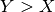

11. Is the posterior on the number of shifts overly sensitive to the prior?¶
At the recent Evolution conference, Brian Moore gave a thought-provoking talk on several outstanding theoretical issues with BAMM. Here, we respond to several concerns about BAMM that were raised during the Moore et al talk and published via social media; see Twitter posts concerning both simulated and empirical datasets. In particular, a concern was raised that the compound Poisson process (CPP) model in BAMM is non-identifiable, and that this non-identifiability is evident from the extreme sensitivity of BAMM results to the underlying prior distribution on the number of rate shifts.
Here, we demonstrate that we can only replicate this purported sensitivity to the prior by using older versions of BAMM that contained several implementation differences relative to current (since Nov 2015) versions. Our impression from the talk and tweeted results is that these graphs resulted from analyses conducted with the most recent version of BAMM. However, the results we have seen cannot be replicated using BAMM versions 2.5 (released November 2015) and later.
BAMM v2.5 was released in part due to several bug reports from one of the authors of the talk; see Github issue 136
and issue 137 . Analyses using the most recent version, BAMM v2.5 (available since November 2015), yields robust inferences on the posterior that are largely independent of the prior. We document our re-analysis of results discussed verbally in the talk and posted to social media for constant rate phylogenies and for the 87-taxon whale phylogeny distributed with BAMMtools.
BAMM assumes that the number of diversification rate regimes on phylogenetic trees is governed by a Poisson distribution with an exponential hyperprior on the Poisson rate parameter. Theoretically, it turns out that this distribution is simply a geometric distribution with a rate parameter p = 1 / (1 +  ). Viewed in this fashion, is simply the mean of the prior distribution on the number of rate shifts. In specifying a BAMM analysis, is identical to the control parameter
). Viewed in this fashion, is simply the mean of the prior distribution on the number of rate shifts. In specifying a BAMM analysis, is identical to the control parameter expectedNumberOfShifts, or – using an older version of BAMM – the inverse of the poissonRatePrior parameter.
We are enthusiastic about scientific dialogue on BAMM’s performance and on alternative inference frameworks for macroevolutionary dynamics. However, it is imperative that theoretical considerations be separated from implementation-related issues that are specific to particular releases of the software program.
11.1. Analysis of constant-rate trees with BAMM v2.5¶
One of the authors on the talk posted an image that illustrates the apparent sensitivity of the posterior distribution on the number of shifts to the prior, . Here is a screenshot from that post illustrating (upper row) the relationship between the posterior and the prior for constant rate trees, and (lower row) the shift model that would be favored if we simply selected the mode of the posterior as the overall best-fit model.

“Events” in the x-axis legend is synonymous with “rate shifts”. The bottom row is not necessarily relevant: presumably, if these are constant-rate trees, we should hope that the mode (MAP) of the posterior distribution is the zero shift model (as seen above). However, the upper panel is potentially of concern: it is clear that the posterior (orange lines) is considerably influenced by the prior distribution (blue lines), and as one increases the prior mean (e.g., = 1.0 -> = 10), the posterior simply shifts to the right. Because we have advocated model selection with Bayes factors, it is not necessarily problematic that the posterior is influenced by the prior: indeed, in Bayesian analysis, there should be some effect – however neglible – of the prior, and the key question is whether this sensitivity matters for empirical inference.
However, these results cannot be replicated using BAMM version 2.5 and later (released November 2015). Here I provide the results from BAMM analysis of 100 phylogenies of 100 taxa each, which we simulated under a constant-rate birth-death process (e.g., trees with no rate shifts). Each phylogeny was analyzed with the Nov 2015 release of BAMM v2.5 under the same prior parameterizations shown in the tweeted results ( = 0.1, 0.5, 1.0, 2, 10). For each count of rate shifts, I will plot the mean of the marginal posterior distribution across all 100 trees (with gray bars), corresponding to the yellow line in the tweeted figure above. I will also show the corresponding (analytical) prior distribution in red.
{kind=link}
We see little substantive effect of the prior across this set of parameterizations (e.g., the distributions in gray do not change much across panels, even though the priors are different). In fact, even if we crank up the prior distribution to have a mean 100x greater than that considered by Moore et al in the tweeted results, we find virtually no influence on the corresponding marginal posterior distribution:

Thus, from  to
to  , the marginal posterior distribution is largely independent of the prior for constant-rate trees with 100 tips. In contrast to the tweeted results posted online, you can see that the posterior distribution is well behaved with increasing values of . It is reasonable to expect small values of (e.g., = 0.1) to have a larger effect on the posterior, because this is a strong prior. It is strong, because the relative difference in prior probabilities between any two integers X and Y is inversely proportional to . You can easily verify this by computing the difference in prior probabilities for any
, the marginal posterior distribution is largely independent of the prior for constant-rate trees with 100 tips. In contrast to the tweeted results posted online, you can see that the posterior distribution is well behaved with increasing values of . It is reasonable to expect small values of (e.g., = 0.1) to have a larger effect on the posterior, because this is a strong prior. It is strong, because the relative difference in prior probabilities between any two integers X and Y is inversely proportional to . You can easily verify this by computing the difference in prior probabilities for any  and . Using the statistical software R, for example, consider the difference in prior probabilities between some numbers of shifts X and X + 100, for 2 different parameterizations of the geometric:
and . Using the statistical software R, for example, consider the difference in prior probabilities between some numbers of shifts X and X + 100, for 2 different parameterizations of the geometric:
# geometric with expected shifts = 1
expected <- 1
y <- expected + 100
par = 1 / (expected + 1) # parameter of the geometric
dgeom(x, par, log=T) - dgeom(y, par, log=T) # should give 63.1
# geometric with expected shifts = 100
expected <- 100
y <- expected + 100
par = 1 / (expected + 1) # parameter of the geometric
dgeom(expected, par, log=T) - dgeom(y, par, log=T) # should give 1.0
As such, you can see that with small values of , we expect – on theoretical grounds alone – to have a larger effect of the prior on the posterior.
What explains the discrepancy between BAMM v2.5 and the results that purport to show high sensitivity of BAMM to the prior? We can replicate the distributions presented by the authors in their tweeted figure , but only if we restrict our analysis to versions of BAMM that predate our major updates in November 2015. Here is an analysis using BAMM v2.4 (June 2015):
{kind=link}
You can see that the posterior is much more sensitive to the prior. This doesn’t mean that results obtained using these versions are flawed, as discussed below. However, it is true that we are more confident in the latest and most stable release of the program.
11.2. These results can be validated¶
It is straightforward to verify the results given above for constant rate trees. To use a version of BAMM associated with a particular Github commit, you can simply checkout the old commit and compile the software. The relevant git command is git checkout commit_ID, where commit_ID is the first 6 or so characters from the commit ID you wish to clone. So, to repeat BAMM analyses using the exact version of BAMM that was archived on Github on November 9, 2015, you can run git checkout af69a923b9, assuming you have cloned the BAMM repository on your machine.
To run BAMM on constant-rate trees, you can simply simulate some phylogenies under a constant-rate birth-death process using any R package that can do this; diversitree and geiger are good options:
library(geiger)
tree <- sim.bdtree(b=0.1, d=0, stop = "taxa", n = 100)
write.tree(tree, "test.tre")
And of course, you can simply set up 3 sequential BAMM runs on this tree as follows (using bash on OSX), assuming you have set up a control file:
./bamm -c myControlFile --expectedNumberOfShifts 0.1 --outName x_0.1
./bamm -c myControlFile --expectedNumberOfShifts 1 --outName x_1
./bamm -c myControlFile --expectedNumberOfShifts 100 --outName x_100
Running this as a shell script will set up and execute 3 BAMM runs in the same directory under 3 very different priors (note again that = 0.1 is a much stronger prior than = 100), saving all results to separate files that are prefixed by the relevant prior mean.
The original PLoS ONE article that tested BAMM’s performance contains a distribution of phylogenies that include constant rate trees and trees with rate shifts. The Dryad data package from the PLoS ONE article can be downloaded and assessed with BAMM v2.5. The constant-rate phylogenies from Rabosky 2014 are a bit larger on average than the 100 taxon tree results I’ve shown above, so these data contain even more signal. We re-analyzed these constant-rate trees using BAMM v2.5 and they show a similar lack of sensitivity to the prior; the following plot shows the marginal posterior probability distribution for this tree set, averaged over all 500 trees. E.g., the marginal probability of k events (“shifts”) is the average such probability over all constant-rate trees in the simulation set:

11.3. Analysis of empirical phylogenies with BAMM v2.5.¶
Another Twitter post showed the effects of the prior on the marginal posterior distribution of rate shifts for an 87-taxon phylogeny of whales; these results were also discussed in the Evolution talk. You can access this phylogeny with data(whales) from our BAMMtools package. Here is the image from Twitter showing the marginal posterior and the prior for the number of shifts for the whale dataset, for 5 values of :

The above figure shows a striking effect of the prior on the posterior distribution of rate shifts for the whale phylogeny. However, these results cannot be replicated with BAMM v2.5. Sebastian Hoehna generously shared the analysis files (control files) that were used to generate these results. Upon reanalysis with BAMM v2.5, we observe strikingly different behaviors: in particular, we see minimal sensitivity to the prior for  . These analyses can be repeated with BAMM Github commits
. These analyses can be repeated with BAMM Github commits af69a923b9 and later, dating from Nov 9 2015).
{kind=link}
In fact, the posterior is actually so insensitive to the prior – even with this tree of 87 tips – that we can crank up the prior mean to = 100 and = 1000, with no demonstrable consequences for inference:
{kind=link}
That is, the posterior distribution on the number of shifts is, for this phylogeny, virtually identical across prior distributions whose means vary by 1000x. As such, there is no evidence that BAMM results are unusually sensitive to the prior, at least if BAMM v2.5 is used for analysis.
What, then, explains the discrepancy between the results I am showing here and the results posted above? The results obtained showing strong effects of the prior can be replicated with some versions of BAMM that predate the November 2015 update. Here is a reanalysis of the input files provided by Hoehna, but using Github release tag ID eb233a28, from June 15, 2015:
{kind=link}
These results appear to precisely replicate the sensitivity to the prior presented in the talk and tweeted to social media . Results purporting to show the extreme sensitivity of BAMM to the prior on the number of rate shifts cannot be replicated for BAMM v 2.5, as claimed. We encourage researchers to confirm our results for these and other empirical datasets.
11.4. How to test the effects of the prior on the posterior¶
It is important that researchers test the effects of the prior on empirical inference. BAMMtools has a simple tool for plotting the marginal posterior and prior distributions on the number of shifts:
library(BAMMtools)
data(whales, mcmc.whales)
plotPrior(mcmc.whales, expectedNumberOfShifts = 1)
One potential source of concern comes when researchers perform analyses with = 1 (expectedNumberOfShifts = 1); this is the default in BAMM control file templates. If your tree has evidence for just one or several shifts, it might appear that the prior has an unusually strong effect on the posterior, simply because you’ve performed analyses with a prior distribution with most of the weight concentrated near where the posterior should be. Under the prior alone, with expectedNumberOfShifts = 1, 95% of our observations should involve 0, 1, 2, or 3 shifts. However, if we use a prior distribution with a much larger mean value – say, expectedNumberOfShifts = 100 – that same prior probability is smeared from 0 to 302 shifts, and the prior is essentially flat. We recommend that researchers consider performing BAMM analyses using several values of , including expectedNumberOfShifts = 100, to assess whether their results are robust to the prior. As an added benefit, we have found that the simulation of the posterior with BAMM is considerably more efficient (e.g, the MCMC converges more quickly to the true posterior) when using large values for .
Please be aware that any comments about the prior and posterior on this page pertain strictly to the prior on the number of rate shifts. There are, of course, several other priors in BAMM that one could be concerned about, including priors on speciation and extinction rates. These prior distributions are moderately flat if you have empirically parameterized your analysis with the function BAMMtools::setBAMMpriors. Some of the worst cases of poor performance that we have seen in BAMM have come from misspecified priors on speciation and extinction rates that led to very poor convergence properties. If you place a strong prior on speciation or extinction (lambdaInitPrior and muInitPrior), and if this prior is mismatched to the scale of your tree, then your BAMM run may not simulate a valid posterior distribution. By mismatch, I mean that your prior distribution puts high weight on values of speciation ( ) and/or extinction (
) and/or extinction ( ) that are not sensible given your phylogeny and branch length scaling.
) that are not sensible given your phylogeny and branch length scaling.
11.5. Nature of the implementation differences¶
There are multiple implementation differences that distinguish BAMM v2.5 from previous versions. Some of these implementation differences are true implementation errors; others are enhancements. Two of the most significant changes to BAMM since the initial inception of the program are described below; unfortunately, we were not consistent in our version indexing of the program in May-June 2015, but we also list the relevant Github commit IDs.
- BAMM v < 2.4
(all Github commits prior to May 26, 2015) All versions of BAMM from this period contained an implementation error in the Hastings ratio for one specific MCMC move which would have magnified the effects of the prior on the posterior. Specifically, BAMM used an incorrect acceptance probability for the MCMC move that updated the Poisson event rate in the model (e.g., the rate at which rate-shifts occur). On the plus side, all versions of BAMM from this time explicitly simulated the prior distribution as no analytical solution was available; because the same error was present in the prior distribution generated by BAMM, the posterior and prior were biased by the same factor. See the section on impacts for some consideration of how this issue might have affected results. This event rate bug was resolved with assistance from Cecile Ané and Bret Larget, who spotted the error and provided the analytical correction.
- BAMM v “2.4”
(Github
eb233a2and related commits). A rapid phase of development where we addressed the Hastings ratio bug described above. Several specific implementations from this time were unreliable and several fixes were posted, such as Github94b2f83, which addressed numerical underflow error in the likelihood calculations. However, several additional implementation and theoretical issues were either introduced or not addressed during this time, including those pointed out to us on Github in October 2015. Several of these issues were true implementation errors.
- BAMM v 2.5
(Github
af69a923b9and all subsequent commits). The most significant change to BAMM, other than the Hastings ratio error described above, followed from our identification of a major theoretical concern with how BAMM and other rate-shift models compute the likelihood of phylogenetic trees under rate-shift models. We do not consider this issue a bug and have described aspects of this in some detail here. A post to our Github repository raised the issue of how E(t) calculations should be handled at internal nodes; this led us to discover what we consider a significant and largely-urecognized problem in diversification studies. The fundamental change to the likelihood calculations in BAMM v2.5 is best viewed as a theoretically coherent solution to an outstanding problem, rather than an implementation error. We have provided (since Nov 2015) a function inBAMMtoolsfor computing likelihoods exactly as done by BAMM (see here), to enable researchers to further explore this issue. Several minor implementation issues were also resolved during this time.
11.6. Impact of implementation differences on empirical inference¶
It is entirely possible that results obtained using BAMM v2.5 will differ from those using earlier versions of the program, and these differences could be due to our resolution of true implementation errors (e.g., the event rate bug) or to our implementation of a new solution to a difficult theoretical problem (e.g., how to correctly compute the likelihood of a rate-shift process on a phylogeny). The most significant differences are likely to involve conclusions about the number of rate shifts inferred from the marginal posterior probability distribution of shifts. As noted above, the event rate bug in BAMM v2.3 and earlier affected both the prior and the posterior. Because both of these terms were biased by the same factor, the bug largely canceled out when model selection was performed with Bayes factors. Moreover, the event rate bug only resulted in modest biases to the posterior when the default value of poissonRatePrior = 1 was used for analysis.
Here is an explicit comparison of the prior as simulated with BAMM 2.3 and earlier (with event rate bug), versus the exact analytical prior, for = 0.1, 1, and 10:
{kind=link}
You can see that the prior distribution changes shape a bit (with a non-zero mode) for = 10, but – at least qualitatively – the distributions seem fairly similar for = 1. Here, I will plot the exact (true) analytical prior probabilities of 0 - 10 shifts under = 1 against the corresponding simulated probabilities using the simulation algorithm containing the event rate bug:

That is, each point corresponds to a prior probability of a particular number of shifts under the old (incorrect) prior and the analytical (correct) prior. For example, the upper-rightmost point (p  0.5) corresponds to the prior probability of 0-shifts; the point immediately to the left (p 0.25) is the prior probability of 1 shift; and so on. This particular prior ( = 1) is by far the most-common parameterization that we have seen in published studies. One can see that the event rate bug probably had a relatively minor effect ( = 1): true probabilities are fairly tightly correlated with the corresponding prior probabilities simulated with old versions of BAMM.
0.5) corresponds to the prior probability of 0-shifts; the point immediately to the left (p 0.25) is the prior probability of 1 shift; and so on. This particular prior ( = 1) is by far the most-common parameterization that we have seen in published studies. One can see that the event rate bug probably had a relatively minor effect ( = 1): true probabilities are fairly tightly correlated with the corresponding prior probabilities simulated with old versions of BAMM.
11.7. Why did we fail to detect the event rate bug in pre-2.5 BAMM?¶
Several reasons. First, we did not have the analytical solution to the true prior in hand. This was only resolved after discussions with Cecile Ané at a BAMM workshop that was held in Ann Arbor in May 2015. Hence, we did not have a true analytical expectation for comparison. Second, BAMM performed well in practice. Model selection with Bayes factors continued to perform well for all previous versions of BAMM (even when both posterior and prior distributions included the event rate bug). We have seen little evidence that previous versions of BAMM have been prone to overfitting. Finally, speciation and extinction rate estimates obtained by BAMM were, in general, highly correlated with the true values in the generating model for BAMM 2.4 and earlier; we have been using, since December 2014, a full BAMM process simulator to validate BAMM. This code is available as a Github repository and, though documentation is still incomplete, the code provides simulation of phylogenies under a complete Poisson process and includes rate shifts leading to unobserved and extinct lineages. Hence, we have yet seen no indication that previous versions performed poorly in practice.
11.8. How can I report implementation errors to the developers?¶
We have two standard channels for bug reporting and/or other concerns about BAMM and BAMMtools. These include our Github page , which provides an archived forum for bug reports and other issues. Likewise, we maintain a Google group dedicated to questions and comments about BAMM.